Every Generation Has Its Fight To Fight on Strikingly
-
Every Generation
has its fight to fight...
This generation's fight is to
take down modern civilization
before modern civilization
takes down life on planet Earth.
Are you in?
-
Which Generation?
Which generation are we talking about here?
We are talking about the generation that is alive now.
If you are dead already, you are too late.
If you are not born yet, you are too early.
If you are alive now, this is your generation.
This planet must live if anyone is to live.
It is not our planet.
And those people holding office...? They are not our leaders.
There is a lot to learn, and a lot to do.
-
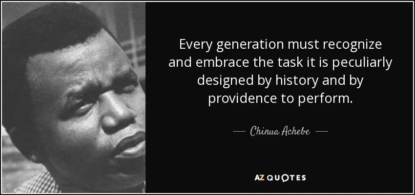
-
Strategies?
Invent The Next Thing And Move Into It
You don't change things by fighting the existing gameworlds. You change things by building and moving into new gameworlds that make the existing gameworlds irrelevant.
Both 'Building New Gameworlds', and 'Moving Into New Gameworlds' are (r)evolutionary actions. You have not been trained for this. You have no authority. They did not give you permission...
Nonetheless, (r)evolution is the work of this generation.
Building new gameworlds and moving into new gameworlds involve learning new skills, exploring new viewpoints, shifting into new paradigms, taking new responsibilities, learning to use new tools, and trusting new levels of teamwork.
We don't already know how to do these things. Nobody does. This is a global co-discovery journey.
This may well be the initiation of the human race into adulthood. We may not make it.
It is your time to show up co-intelligently.
You will show up according to what you become now, what you actually do differently, your experiments and new behaviors, not what you talk about.
Action, invention, shifting, transforming... these are the stepping-stone Team skills. This very different from school.
No one can make the steps for you.
More interestingly, no one can stop you from making the steps.
Stand Together In Clarity
- The Rule of Law of western civilization is exterminating life on Earth at the fastest possible rate.
- Anyone following the Rule of Law of western civilization is criminally insane.
- Anyone enforcing the Rule of Law of western civilization has already forfeited their life.
Together we are inventing the next thing and moving into it all around the world.
You may not know what you are moving into, but it can help a lot to be radically clear about what you are leaving behind... Start reading at #1 again...
Start Your Possibility Team
Inventing and moving into the next thing is not a lone wolf 'single fighter' action. It is teamwork.
Start your Team. Call it what you want: Transformation Team, Yellow Submarine, Next Culture Circle, Village Seed... we call it Possibility Team.
You can start with 3 people. Just start. Meet at least once a week for 2-3 hours, same time each week. Rotate Spaceholders.
If you get to 12 people, we suggest dividing in half and making 2 Teams.
We made http://possibilityteam.mystrikingly.com with a free PDF Possibility Team Handbook you can download, plus tons of ways to expand your repertoire of possibilities. All our stuff is open code thoughtware, copyleft. It cannot be copyrighted. We make it to feed the Creative Commons.
Then learning new distinctions together, practice new tools together, help each other learn how to connect, how to be present as yourselves, how to get centered, how to feel, how to speak out, how to make team decisions, how to do what matters most while having High Level Fun.
Experiment, Experiment, Experiment!
Each and every skill you learn and practice in your Possibility Team can be shared whenever you out are on the street or at a Conference, or Festival, or ConFest (Conference/Festival combining exchange with celebration). Everything on this websit is copyleft, open code thoughtware you can share. The more you share it, the more the treasure grows, and the more the morphogenetic field of the human race changes to hold more consciousness. Consciousness grows automatically when distinctions are added to a person's Being. Practice builds matrix. There is more to learn about Building Matrix.
The point is to be able to take a stand for what you have taken a stand for. The people who do this become adults in the archetypal sense of the word.
We are designed to take adult-level responsibility, and even radical-responsibility, which is Archetypal level responsibility.
Adulthood is where life gets big and real. If you ever feel hollow, empty, lost, not really living yet, not knowing what you are supposed to do with your life... it is probably because you have not been given enough initiations into authentic adulthood.
You have so much Standard Human Intelligence Thoughtware to upgrade.
At the same time, you have so many inner and outer resources to jack-into that modern culture knows nothing about.
-
Why?
-
What To Do Now?
As Joseph Campbell has said: “We must be willing to let go of the life we planned so as to have the life that is waiting for us. A hero is someone who has given his or her life to something bigger than oneself.”
Once you have gone to the edge of the ordinary culture you become an Edgeworker.
To Connect with your fellow Edgeworkers you can call together the first Circle of your 3Cell.
One 3Cell has two Circles of 3. You are in both Circles.
The 3Cells around you can come together each week in a Possibility Team.
From the edges you can see in both directions, in at the old culture, out at other possibilities.
There are so many way to take action. Do not let the framelessness overwhelm you.
You are like a bird who as suddenly found her way out of the cage...
If you stand there, the cat will get you. If you keep moving, Evolution can guide your Path.
Below are some excellent people and projects we know about.
Perhaps you know of others? Please let us know.
[
](http://3-3-3.mystrikingly.com/)
Do The 3-3-3 Exercise
Experiment EVERYGEN.01
Do the 3-3-3 Exercise, 3 minutes at a time, 3 times per week, for 3 months.
This is how you:
- Take your Center back!
- Take your Clarity back!
- Take your Voice back!
- Take your Authority back!
- Take your Balls back!
- Take your Space (archived — not captured) back!
- Take your Life back!
After doing the 3-3-3 Exercise for 3 months... really doing it... not just thinking about doing it... you will find yourself to be a new person: you.
Nobody can do the 3-3-3 Exercise for you.
Nobody can stop you from doing it.
After doing this experiment, please register Matrix Code EVERYGEN.01 in your free account at StartOver.xyz.
This Experiment is worth 12 Matrix Points.
[

](http://3cells.mystrikingly.com/)
Make Your 3Cell
Experiment EVERYGEN.02
The purpose of your 3Cell is to support each other's Evolution.
You begin with a Team of 3 to make the first Circle of your 3Cell.
But each 3Cell has 2 Circles of 3! You are in both Circles of 3.
Why 2 Circles?
Because then you always have a backup. No matter what happens there will be someone available to turn the lights of awareness on so everyone can see what is lurking in the Shadows.
This is the Pirate Agreement (archived — not captured) in your 3Cell... to wake each other up. To give courage: To be Present. To keep moving. To keep Evolving.
To Connect. To Commit. To Consciously-Change.
You just created a home of like-minded friends to support each other's evolution. Show others how to do this. The (r)evolution takes off!
After doing this experiment, please register Matrix Code EVERYGEN.02 in your free account at StartOver.xyz.
This Experiment is worth 1 Matrix Point.
[

](http://possibilityteam.mystrikingly.com/)
Join A Possibility Team
Experiment EVERYGEN.03
Bring your 3Cell to a Possibility Team. Here is where you invent and practice the ways of next culture... called archiarchy - the culture that naturally emerges after matriarchy and patriarchy have run their course. Here is also where you can practice how to share what you learn with others.
Your Possibility Team (or... call it whatever you want...) is your transformational chamber, your safe space, your experimental laboratory, your squad, your weeky meeting in the (R)evolution.
After doing this experiment, please register Matrix Code EVERYGEN.03 in your free account at StartOver.xyz.
This Experiment is worth 1 Matrix Point.
[
](http://quitschool.mystrikingly.com/)
Quit School...
Experiment EVERYGEN.04
Each day you spend in school is one day less you have to prepare yourself for what is coming...
You already know what is coming.
The people who are afraid that you might quit school are the people who are benefitting from you staying in school.
What is THEIR benefit from you staying in school?
What is YOUR benefit from staying in school? How sure are you about that?
Bathe in the abundance of resources at QuitSchool.org.
Then let's continue this conversation, shall we?
After doing this experiment, please register Matrix Code EVERYGEN.03 in your free account at StartOver.xyz.
This Experiment is worth 1 Matrix Point.
[

](http://adulthood.mystrikingly.com/)
Do Whatever It Takes To Shift To Adult-Level Responsibility
Experiment EVERYGEN.05
There is a spectrum of the level of responsibility you can take.
If you ask, "When a child make a mess, who cleans it up?" the answer is usually, "The adults."
Where are the adults in modern culture?
Modern culture is making horrible messes with no intention at all of ever cleaning them up... corporate military industrial wastes.
This places modern culture squarely at Child Level Responsibility.
Uninitiated adolescents are allowed to have positions of authority... is this stupid, or what? (Hierarchies are a design error (archived — not captured) of modern culture.)
Authentic adulthood initiatory processes can begin when you are 18 years old (before then you prepare for them...). They build in you the thing that allows you to be more conscious and responsible. Then you can jack-in to your Archetypal Lineage and get to work serving the Village.
After doing this experiment, please register Matrix Code EVERYGEN.05 in your free account at StartOver.xyz.
This Experiment is worth 1 Matrix Point.
[

](http://initiations.mystrikingly.com/)
Do Authentic Adulthood Initiatory Processes
Experiment EVERYGEN.06
We live in a responsible universe.
What this means is if you drop a piece of litter somewhere it stays there until it is picked up.
But we are raised in an irresponsible culture.
The way to become more responsible is to build the matrix to hold more awareness. Awareness breed responsibility.
Authentic adulthood initiations build matrix to hold more consciousness.
Nobody can get initiated for you.
More interestingly, nobody can stop you from finding authentic initiations and doing them.
The world awaits you on your Path of initiations.
The next move is up to you.
After doing this experiment, please register Matrix Code EVERYGEN.06 in your free account at StartOver.xyz.
This Experiment is worth 3 Matrix Points.
[
](http://thoughtware.mystrikingly.com/)
Upgrade Your Thoughtware
Experiment EVERYGEN.07
The thing about using Standard Human Intelligence Thoughtware is that it produces standard human intelligence...
Fortunately, thoughtware can be upgraded. You begin by noticing the thoughtware you are currently using. This may not be a pretty sight.
Thoughtware is what you think with, which is what establishes the context of your thinking.
In school they tell you what to think about, which establishes the content of your thinking.
The context of your thinking was already set before you went to school.
So, where did you get the thoughtware that sets your context? (from your parents...)
Where did your parents get their thoughtware? (from their parents...)
You are using very outdated thoughtware.
Your thoughtware can be upgraded.
After doing this experiment, please register Matrix Code EVERYGEN.07 in your free account at StartOver.xyz.
This Experiment is worth 1 Matrix Point.
[

](http://experientialreality.mystrikingly.com/)
Expand From Verbal Reality Into Experiential Reality
Experiment EVERYGEN.08
School and modern culture overemphasize life in your intellectual body, your mind and all of its thinking. This is called Verbal Reality.
Ask yourself, Which is bigger, the Universe? Or my vocabulary?
Gaining access to the very-much-alive rest of the Universe beyond your mental chatterbox involves shifting out of Verbal Reality and into Experiential Reality.
Here is how to do this.
This is a super thing to practice in your 3Cell.
After doing this experiment, please register Matrix Code EVERYGEN.08 in your free account at StartOver.xyz.
This Experiment is worth 1 Matrix Point.
[
](http://becomecentered.mystrikingly.com/)
Take Back Your 5 Body Centers
Experiment EVERYGEN.09
When you do not experientially distinguish the Centers in each of your 5 Bodies then you cannot be yourself in the Present, and you cannot detect when you are being adaptive and not being yourself. Then you have no power to do things or change things.
Exploring these experiential distinctions brings your 3Cell to a new aliveness.
After doing this experiment, please register Matrix Code EVERYGEN.09 in your free account at StartOver.xyz.
This Experiment is worth 1 Matrix Point.
[
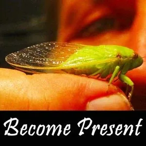
](http://becomepresent.mystrikingly.com/)
Become Present
Experiment EVERYGEN.10
There are so many ways to become present, suggesting that there are an equal number of ways to avoid being present.
Why would anyone want to stay out of the Present? The Present is where you can choose, declare, ask, feel, take action, be responsible...
Ahhh! We found it!
Avoiding being Present equates to avoiding Being responsible!
Then it is all someone else's fault. You can blame them for everything that is not working. You can be a victim and prove that life is not fair.
Or... you could learn to Become Present, put your Gremlin on a diet, and take your power back to get initiated and bring your Archetypal Lineage to life. High Level Fun is in the present.
After doing this experiment, please register Matrix Code EVERYGEN.10 in your free account at StartOver.xyz.
This Experiment is worth 1 Matrix Point.
[
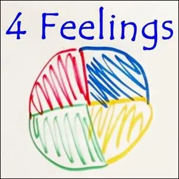
](http://4feelings.mystrikingly.com/)
Learn To Consciously Feel
Experiment EVERYGEN.11
Additional explanations and experiments about consciously feeling can be found in books by Patrizia Patz (books in deutsch), Nicola Neumann-Mangoldt (Nagel) (book in deutsch), and Clinton Callahan (books in English and deutsch).
Please be insistent about distinguishing every time between Feelings and Emotions. If the experience lasts longer than 3 minutes it is not a Feeling. It is an Emotion.
Feelings are for handling things. Emotions are for healing things.
For an education in Emotional Body Healings Techniques, check out the Feelings Practitioners. Also do the experiments in S.P.A.R.K. 206.
As soon as you learn Feelings and Emotions, it is so important to unmix your emotions! You can do this for each other in your 3Cell or Possibility Team and then you can do this for everyone you meet in the rebellion!
After doing this experiment, please register Matrix Code EVERYGEN.11 in your free account at StartOver.xyz.
This Experiment is worth 1 Matrix Point.
[
](http://stellating.mystrikingly.com/)
Stellate Your Feelings
Experiment EVERYGEN.12
We were trained to be 'planets': to be adaptive, consume, imitate, obey.
We were designe to be 'stars': radiate, generate, explore, invent, shine.
The change from being a 'planet' to being a 'star' is called 'Stellating'.
Stellating is an authentic adulthood initiatory process.
There is a common-sense order to initiations. Start with Anger as the first feeling to Stellate. That ignites the Warrioress or Warrior Archetype who can then hold space for your other Archetypes to come to life.
Before Stellating it is important that the people in your 3Cell or Possibility Team have upgraded their thoughtware from the Old Thoughtmap of Feelings to the New Thoughtmap of Feelings.
It is also important to start with Writing Rage, Push-Shoulders Rage, Standing-Rage, and Mattress Rage (The 333 Exercise) before you Stellate your anger.
It would be important that someone who has Stellated their feelings in a Possibility Lab be there to hold space and navigate the Stellating processes until some others are ready to hold space for it themselves.
After doing this experiment, please register Matrix Code EVERYGEN.12 in your free account at StartOver.xyz.
This Experiment is worth 12 Matrix Point.
[
](http://realvoice.mystrikingly.com/)
Unleash Your Real Voice
Experiment EVERYGEN.13
You have a lot to say.
Who is going to say it?
When?
After doing this experiment, please register Matrix Code EVERYGEN.13 in your free account at StartOver.xyz.
This Experiment is worth 1 Matrix Point.
[
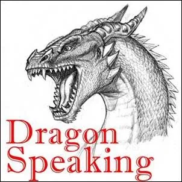
](http://dragonspeaking.mystrikingly.com/)
Learn and Practice Dragon Speaking
Experiment EVERYGEN.14
There are 7 Kinds of Speaking (archived — not captured).
'Dragon Speaking' becomes valid when you have brought your Emotional Body to life, Stellated your feelings, and you clearly distinguish between Feelings and Emotions.
The world will function very differently for you when your Dragon can also speak.
After doing this experiment, please register Matrix Code EVERYGEN.14 in your free account at StartOver.xyz.
This Experiment is worth 1 Matrix Point.
[
](https://www.fridaysforfuture.org/)
Join Fridays For Future #fridaysforfuture
Experiment EVERYGEN.15
More than Facebook Twitter, Instagram:
#FridaysForFuture fb-page
#FridaysForFuture fb-group
@Fridays4Future Twitter
@Fridaysforfuture on instagramThis means stop everything on Fridays. Go connect and strategize at the town hall. #climatestrike, #fridaysforfuture.
Talk with anyone who looks at you. Say, "Hi! Nice to see you here! Can I ask you a question? I want to know what thoughtware you are using for your feelings? Who are you? What parts of the (r)evolution are you sourcing?"
Or ask them about how they deal with the rage and grief about the situation we are in now, or how they build their Team, or how they connect with their friends about feeling powerful enough to change their lives with new behavior? Listen and take clear notes.
When you have enough notes, write the book, then write the script.
After doing this experiment, please register Matrix Code EVERYGEN.15 in your free account at StartOver.xyz.
This Experiment is worth 3 Matrix Points.
[

](http://sparks-english.mystrikingly.com/)
Subscribe To S.P.A.R.K. Experiments
Experiment EVERYGEN.16
S.P.A.R.K. stands for Specific Practical Applications of Radical Knowledge.
Each S.P.A.R.K. starts with a transformational DISTINCTION, followed by NOTES for unfolding what the distinction implies, and then EXPERIMENTS to try in your daily life that bring the distinction to life.
You can receive a random S.P.A.R.K. each week by email.
You can receive the latest S.P.A.R.K.s by email once per month if you subscribe to this newsletter.
Doing S.P.A.R.K. experiments with your 3Cell and/or Possibility Team upgrades your thoughtware and builds matrix in your Being to hold more consciousness.
Reading and understanding S.P.A.R.K.s but not doing the EXPERIMENTS only builds up your eye muscles...
S.P.A.R.K.s are being translated into 13 languages by a cool Team of translators (archived — not captured)... and we need help.
After doing this experiment, please register Matrix Code EVERYGEN.16 in your free account at StartOver.xyz.
This Experiment is worth 1 Matrix Point.
[

](https://annechloedestremau.wixsite.com/startover/about)
Use StartOver.xyz As Possibility Treasure and Support For Your 3Cell Adventure Journeys
Experiment EVERYGEN.17
Everyone already knows we need to change our thinking, change what we think with, change what we think about, change the level of responsibility of our actions...
Yes. But how!?!
In my 3Cell Team I think we have figured out how! And we are creating it! I want to share it with you! We call it StartOver.xyz and have built a launching platform at http://spaceport.mystrikingly.com.
StartOver.xyz is a transformational learning environment - a new kind of classroom - a multidimensional online book full of side-doors and moving staircases - where you follow whatever sparks your interest - whatever you need to know Right Now - bouncing around through over 300 interlinked evolving website bubbles that overflow with real-world Experiments to try.
By doing an Experiment you build matrix in you which catches the awareness to be more competent with manifesting your projects.
Each time you enter StartOver.xyz you are a different person. You've learned things. You have a different quality of attention, new questions, whole new problems to solve. Your new needs lead you straight to surprising new opportunities in StartOver.xyz through doorways you could not see before. There are levels and dimensions at StartOver.xyz that are invisible to you until you are ready, until you need their treasures, and then Big-Badda-Boom! There they are waiting for you!
We ask people to register their 'Matrix Points' for each Experiment they do at login.startover.xyz so that we can document how we upgrade the morphogenetic field of the human race together.
Learning new ways of thinking - upgrading your 'thoughtware' - is so much Fun at StartOver.xyz that people keep calling it a game: a free-to-play massively-multiplayer online-and-offline matrix-building thoughtware-upgrade personal-transformation adventure-game, open 24/7/365 for anyone around the world!
Let's create regenerative human cultures on Earth together!
The r(e)volution goes viral!
After doing this experiment, please register Matrix Code EVERYGEN.17 in your free account at StartOver.xyz.
This Experiment is worth 1 Matrix Point.
[
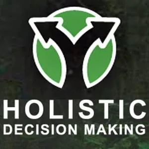
](https://www.holisticdecisionmaking.org/)
Learn And Practice Holistic Decision Making
Experiment EVERYGEN.18
Holistic Decision Making is socially, environmentally, and economically sound in the short, medium and long term. Now that’s a bit of a mouthful, I know. It is also a pretty big call, when you think about it. Humans are notorious for making decisions based on a short-term social, environmental, or economic outcome that has unintended short, medium, and long term consequences in the other two areas. An all-too-common example is a business that makes decisions towards financial outcomes, or a non-profit that makes decisions towards environmental outcomes, where both do so in a way that burn out the individuals involved (an unintended social consequence). Sooner or later, it is game over, and people give up, exhausted and demoralized.
If we were all making socially, environmentally and economically good decisions that were sound in the short, medium and long term, (even 25% of the time!) the world would be going in a radically different and more beautiful direction than it is right now. Imagine a world filled with groups or organisations that simultaneously strengthened individual and social health and happiness, ecosystem health and diversity, and the local economy, both now and long into the future. This is a world most of us want to live in, and it is precisely what Holistic Management is about empowering. It is nothing if not ambitious, though as we will see, it is also nothing if not practical and not that hard if you can give it just a little time and discipline.
Holistic Decision Making was formulated by Allan Savory, and it all started with his quest to figure out what was behind the world’s rapid and ongoing transformation into desert. After a long and unexpected journey he realized that the only common factor that underlies desertification the world over is human decision making. He then developed Holistic Management as a framework for empowering land managers to make land management decisions that halt and indeed reverse desertification.
You can apply Holistic Decision Making to implement your Team's projects more effectively (...especially if you add in a few distinctions such as Feelings/Emotions, Box Technology, Your Gremlin, Story Worlds, 2 Dramas, 4 Brains, Bright Principles, and Torus Meetings.)
After doing this experiment, please register Matrix Code EVERYGEN.18 in your free account at StartOver.xyz.
This Experiment is worth 1 Matrix Point.
[
](http://schooloflostborders.org/)
Get Into A Vision-Fast With School Of Lost Borders
Experiment EVERYGEN.19
The School of Lost Borders offers vision fasts and rites of passage training which cultivate self-trust, responsibility, and understanding about ones' unique place within society and the natural world. Its programs provide guided opportunities, perspectives, teachings, and much needed self-reflection time in a non-judgmental yet challenging environment.
We are an interconnected circle of men and women who share a deep respect for the land, human nature, ceremony, and each other. We are guides who extend this same respect and caring to each person who feels the call to join us in ceremony.
We live a passion for the diversity of life, for the nature of human, for the voice of ceremony, for the healing qualities of community. We take the role of guide seriously, setting our own story aside to help birth each individual’s evolving mythos. We are not Gurus or Healers; we are skilled midwives in supporting the natural transitions and initiations of living and dying. Our teachers are the land, the ceremony itself, and each person bold enough to step across the threshold into the unknown mystery of their “becomingness”.
We recognize that a full life is made up of big and small initiating experiences, each one precious and offering opportunities for growth. The interplay of light and shadow, pain and celebration, forms the character of our evolving story as we claim our unique place in humanity and in our communities. We offer a time-honored way to lift these significant life events up, and say “Holy, Holy”.
After doing this experiment, please register Matrix Code EVERYGEN.19 in your free account at StartOver.xyz.
This Experiment is worth 11 Matrix Points.
[
](http://takeastand.mystrikingly.com/)
Take A Stand For What You Have Taken A Stand For
Experiment EVERYGEN.20
To 'take a stand for what you have taken a stand for' means to 'commit to your own commitment', to 'follow through with what flows through you'.
Sometimes you can learn to do this best by committing to someone else's commitment first, for example, the people in your 3Cell.
Being born in these times indicates that you have taken a stand for making a difference in the evolution of consciousness on planet Earth. Whether you see this or not is a different story.
Nonetheless, your stand cannot manifest until you take a stand for the stand that you have taken. Makes sense?
To take a stand for your own stand it helps to discover what exactly your stand is. You can get this clarity from your 3Cell and your Possibility Team. We can help each other start saying and doing what we came here to say and do.
Your 3Cell and your Possibility Team are safe places to 'get going fast enough down the runway that your wings lift you off the ground'.
You are already designed to fly.
One way to take a stand for what you have taken a stand for is to make your own personal website and write about your stand-taking Experiments there!
After doing this experiment, please register Matrix Code EVERYGEN.20 in your free account at StartOver.xyz.
This Experiment is worth 1 Matrix Point.
[
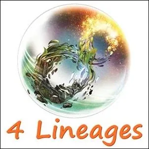
](http://4lineages.mystrikingly.com/)
Step Into Your 'Earth Guardian' Or Other Archetypal Lineage
Experiment EVERYGEN.21
There are four clans of Archetypal Lineage:
You probably have natural resonance with one of these Archetypal Lineages. You can prepare yourself to jack-in to your Archetypal Lineage. This involves serious work, involving authentic adulthood initiatory processes for a few years.
Next cultures naturally provide you with preparations for initiations that begin when you are about 18 years old, rather than modern culture's standard school curriculum.
If you cannot find a next culture (archearchal) village for your initiations, you can start looking elsewhere, such as: http://initiations.mystrikingly.com.
These secret hides in plain sight...
After doing this experiment, please register Matrix Code EVERYGEN.21 in your free account at StartOver.xyz.
This Experiment is worth 1 Matrix Point.
[
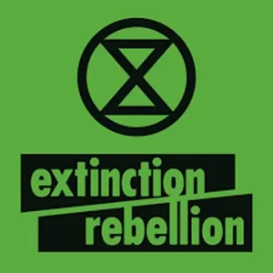
](https://rebellion.earth/)
Throw Yourself Into Rebelling Against Extinction
Experiment EVERYGEN.22
The Truth: We are facing an unprecedented global emergency. Life on Earth is in crisis: scientists agree we have entered a period of abrupt climate breakdown, and we are in the midst of a mass extinction of our own making.
The science is clear: It is understood that we are facing an unprecedented global emergency. We are in a life or death situation of our own making. We must act now.
Extinction Rebellion is an international apolitical network using non-violent direct action to persuade governments to act on the Climate and Ecological Emergency.
We have three demands in the UK:
1. TELL THE TRUTH: Government must tell the truth by declaring a climate and ecological emergency, working with other institutions to communicate the urgency for change.
2. ACT NOW: Government must act now to halt biodiversity loss and reduce greenhouse gas emissions to net zero by 2025.
3. GO BEYOND POLITICS: Government must create and be led by the decisions of a Citizens’ Assembly on climate and ecological justice.
There is no more time to deliberate about the necessity of change.
There are already more than 200 million people aware of this.
We are already implementing Decisive Ecological Warfare.
After doing this experiment, please register Matrix Code EVERYGEN.22 in your free account at StartOver.xyz.
This Experiment is worth 1 Matrix Point.
[

](https://deepgreenresistance.org/en/)
Deep Green Resistance Implements Decisive Ecologlical Warfare (DEW)
Experiment EVERYGEN.23
Life... is bold.
Are you?
Modern culture is waging war against nature.
What strategy matches the scope of the problem?
The world is at stake.
How do you fight off an occupying force?
When will you take action to implement Decisive Ecological Warfare (DEW) Strategy?
Listen intently to this Podcast: HERE
The natural world is the source of all life and it is being systemmatically destroyed by the dominant human culture.
The needs of human economy cannot be opposed to the needs of the natural world.
If aliens were waging war against nature, how far would you let them go before you acted against them to defend the Earth?
The planet needs you. You can join the struggle on the side of the living.
After doing this experiment, please register Matrix Code EVERYGEN.23 in your free account at StartOver.xyz.
This Experiment is worth 1 Matrix Point.
[

](https://beautifultrouble.org/)
Get Into Beautiful Trouble
Experiment EVERYGEN.24
Beautiful Trouble is a book, web toolbox and international network of artist-activist trainers whose mission is to make grassroots movements more creative and more effective.
We’re a collaborative effort by 70 artist-activists-strategists and 10+ leading creative campaign organizations including the YesMen/YesLab, Ruckus Society, Other 98% and others. Praised by Naomi Klein as “elegant and incendiary,” the book is being used by campaigns and classrooms across North America and Europe; it just sold its 10,000th copy, and has been translated into six languages. A beta of the web toolbox (you’re looking at it) is online, and offers all the book content (and more) to the public under a creative commons license.
Who are we exactly?
The people who came together to write Beautiful Trouble stayed together and became a community: an extraordinary alliance of artists, trainers and creative campaigners who continue to make, teach, and celebrate game-changing creative activism in several exciting ways...After doing this experiment, please register Matrix Code EVERYGEN.24 in your free account at StartOver.xyz.
This Experiment is worth 1 Matrix Point.
[
](https://beautifulrising.org/)
Experiment With Resources From Beautiful Rising
Experiment EVERYGEN.25
Inspired by the concept of a 'pattern language', Beautiful Rising teases out the key elements of creative activism:
STORIES: Accounts of memorable actions and campaigns, analysing what worked, or didn’t, and why.
TACTICS: Specific forms of creative action, such as a flash mob or blockade.
PRINCIPLES: Time-tested guidelines for how to design successful actions and campaigns.
THEORIES: Big-picture ideas that help us understand how the world works and how we might change it.
METHODOLOGIES: Strategic frameworks and hands-on exercises to help you assess your situation and plan your campaign.
After doing this experiment, please register Matrix Code EVERYGEN.25 in your free account at StartOver.xyz.
This Experiment is worth 1 Matrix Point.
[

](https://dgrnewsservice.org/)
Inform Yourself About What Is Necessary To Actually Care For Life On Earth
Experiment EVERYGEN.26
Human overshoot is temporarily hidden by burning fossil fuels.
The gruesome clarity about choosing to collapse industrial civilization on purpose or let it grind the planet lifeless dust.
https://www.youtube.com/watch?time_continue=1&v=10-snJHGXWU
Where is your loyalty? To life on Earth? Or to support the dominant culture?
Your actions don't lie.
Luck is where preparation meets opportunity.
They cannot hang all 300 million of us.
After doing this experiment, please register Matrix Code EVERYGEN.26 in your free account at StartOver.xyz.
This Experiment is worth 1 Matrix Point.
[
](http://slaythejabberwock.mystrikingly.com/)
Each Day Find A New Way To Slay The Jabberwock
Experiment EVERYGEN.27
Extinction Rebellion and Deep Green Resistance and Earth Guardian and Fridays For Future are not legal conflicts.
They are political insurgency.
The bad news is: as ruling systems try to suppress the insurgencies they engage in low-intensity warfare. In other words, we are already at war.
The good news is: the states don’t know how to win this war.
“No state has ever defeated an indigenous insurgency.” - Jerry Boyle
Extinction Rebellion recognizes that the center of world power doesn't reside in Washington or London or Moscow or Beijing anymore. It's in the executive suites and luxury resorts behind the global corporate hegemony. This protest dispenses with the middle men (governments) and goes straight after the real power to divest it of whatever credibility it still tries to claim.
The reason we are seeing this movement right now is because Capitalism, the last great ideological system, is in crisis. This isn't merely a crisis of outcomes (economic depression, financial panic, etc.). It's a crisis of BELIEF.
While people generally believe in the idea of capitalism, a critical mass of people now think that the global capitalist system we currently have is so badly run, so corrupt, so terrible at delivering results that it needs either A) a complete overhaul or B) to be replaced with something new (which equates to the same thing, because the Jabberwock cannot be overhauled. It cannot become anything other than a Jabberwock.).
After doing this experiment, please register Matrix Code EVERYGEN.27 in your free account at StartOver.xyz.
This Experiment is worth 1 Matrix Point.
[
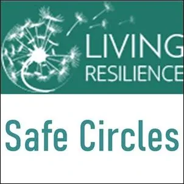
](https://livingresilience.net/)
Make Sure You Are Supported During Your Liquid States When Implementing Decisive Ecological Warfare As An Above-Ground Activist
Experiment EVERYGEN.28
What if the bravest thing we could now do is to admit to the collapse we’ve caused…
What if the wisest thing we could now do is to cause that collapse?
We are living in times of global collapse of Earth and Human systems. Humanity, particularly those of privilege, wealth and power, is still reluctant to be fully aware of this collapse, much less to be responsible for it.
'Safe Circles' are committed to providing safe environments, powerful tools, and coaching for those who are brave enough to face directly our many global problems, challenges, and predicaments.
'Safe Circle Calls' are a safe environment where each person can share and be heard, without being attacked or judged and an opportunity for kindred spirits to gather together to share their ups and downs related to living in a world of folks who are willfully ignorant about our situation.
We are an adolescent culture that appears to have invited in shadow, trauma and addiction where humans have the potential of ongoing interbeing with the miraculous Web of Life.
After doing this experiment, please register Matrix Code EVERYGEN.28 in your free account at StartOver.xyz.
This Experiment is worth 1 Matrix Point.
[

](https://www.stopecocide.earth/)
Take The Stand That Every Human Agency Stop Ecocide Now
Experiment EVERYGEN.29
Right now, ecocide (destroying the Earth) is legally permitted.
Help us make it an illegal crime.
There is nothing more powerful you can do with two minutes and a fiver.
BECOME AN EARTH PROTECTORWe are Ecological Defence Integrity (EDI), a small UK non-profit founded by legal pioneer the late Polly Higgins, with a team of international criminal lawyers, diplomats and evidence experts working to advance a law of ecocide at the International Criminal Court.
See more legal / historical material at our information portal on Ecocide Law.
Our international strategic team is already working directly with Pacific small island (Great Ocean) states and has been accompanying them to the International Criminal Court’s annual conference for the last 3 years. These islands, such as leading Pacific voice Vanuatu, have the strongest incentive to propose an amendment to international law - climate crisis is already an existential threat for them.
A second, rapidly expanding team manages the public-facing campaign to support this work (including the present website).
The two aspects of our work are now co-ordinated by key spokesperson Jojo Mehta, co-founder with Polly of EDI and the Stop Ecocide campaign.
After doing this experiment, please register Matrix Code EVERYGEN.29 in your free account at StartOver.xyz.
This Experiment is worth 1 Matrix Point.
[
](https://www.earthguardians.org/)
Become An Earth Guardian
Experiment EVERYGEN.30
We inspire and train diverse youth to be effective leaders in the environmental, climate and social justice movements. Through the power of art, music, storytelling, civic engagement, and legal action, we’re creating impactful solutions to some of the most critical issues we face as a global community.
After doing this experiment, please register Matrix Code EVERYGEN.30 in your free account at StartOver.xyz.
This Experiment is worth 1 Matrix Point.
[
](http://gaiaishiring.org/)
Realize That Gaia Is Hiring For Life - Get Hired
Experiment EVERYGEN.31
Yes, Gaia needs you.
You are the awareness of Gaia. What you are aware of, Gaia is aware of.
You are the heart, hands, eyes, and feet of Gaia.
You are the mouth of Gaia.
You can say, "Stop!" for Gaia. She has no mouth. You can say "No more!" for Gaia. You can experience and express the heart of Gaia.
If you are willing, Gaia is hiring.
The jobs from Gaia create the best life there is for a human being .
After doing this experiment, please register Matrix Code EVERYGEN.31 in your free account at StartOver.xyz.
This Experiment is worth 1 Matrix Point.
[
](https://connect.pachamama.org/)
Connect In With The Pachamama Alliance Global Commons
Experiment EVERYGEN.32
Connect in with the Pachamama Alliance Global Commons to share what you are creating and to see how you can collaborate with others. Learn about the 100 most effective carbon-dioxide drawdown tactics.
Pachamama Alliance is a global community committed to transforming human systems and structures that separate us, and to transforming our relationships with ourselves, with one another, and with the natural world. We engage together in a spirit of inquiry and mutual support as we seek to expand our individual and collective capacity to create change in the world, because none of us is as smart as all of us.
- Participate in conference calls and online discussions to explore key issues of our times
- Access trainings and resources for leading Pachamama Alliance workshops
- Find people in your area
- Join groups with people around the world who share common interests
- Draw inspiration and receive support from a global community
After doing this experiment, please register Matrix Code EVERYGEN.32 in your free account at StartOver.xyz.
This Experiment is worth 1 Matrix Point.
[
](http://artabana.org/)
Artabana Health Cooperative
Experiment EVERYGEN.33
Artabana is a health cooperative in Germany.
Their website is only in German, so get your google translator up and running.
The Artabana gameworld is amazingly effective, and wonderful to be in.
The Artabana gameworld design can be copied anywhere in the world.
Figure it out.
Copy it.
Add the Artabana gameworld (archived — not captured) to your nanonation.
After doing this experiment, please register Matrix Code EVERYGEN.33 in your free account at StartOver.xyz.
This Experiment is worth 1 Matrix Point.
[
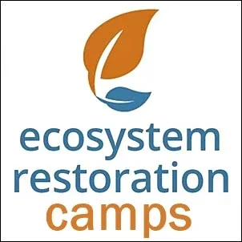
](https://www.ecosystemrestorationcamps.org/)
Consider Moving To An Ecosystem Restoration Camp For A While
Experiment EVERYGEN.34
Vast areas of Earth have been degraded by human activity...
We are building Ecosystem Restoration Camps to restore these lands to ecological health and vitality.
We are a growing, grassroots movement of everyday people dedicated to restoring degraded land. Together we can restore the Earth.
OUR VISION: We envision a fully-functional, peaceful, abundant, biologically diverse Earth brought about through cooperative efforts for the ecological restoration of degraded lands.
OUR MISSION: To work together to restore ecological functionality, to build Research, Training and Innovation Centers for Ecological Restoration, to engage people in inquiry into ecological restoration, and train people in how to restore degraded lands in perpetuity.
OBJECTIVES:
- To train people in techniques for restoring land and provide practical opportunities for people to practice new approaches to landscape restoration.
- To build research, training and innovation centers to engage people in ecosystem restoration.
- To manage a flow of volunteers of all ages to restore agricultural and natural ecosystems.
- To increase the organic matter, carbon content and water retention capacity of the soil to stimulate large scale carbon sequestration.
- To improve the livelihoods of farmers, landowners and local communities around the camps.
After doing this experiment, please register Matrix Code EVERYGEN.34 in your free account at StartOver.xyz.
This Experiment is worth 1 Matrix Point.
[
](http://becomemoney.mystrikingly.com/)
Inspect Your Values / Become Money / Create Your Next Culture Local Economy
Experiment EVERYGEN.35
So many people are strangely freaked out about having enough money to live in the same moment they are actually living! Upgrading human thoughtware from modern culture's planet-killing value system requires significant Teamwork. Your Possibility Team is the perfect place to take baby-step after baby-step. The symbol in the 'Become Money' logo is the symbol for the 'Gaia', an archearchal culture (archived — not captured) currency. One 'Gaia' has the value of planting one tree. There is no exchange rate between the Gaia and any other currency. You could make the Gaia the currency of your nanonation gameworld (archived — not captured). Write it into your Codex and figure out how to make it work.
After doing this experiment, please register Matrix Code EVERYGEN.35 in your free account at StartOver.xyz.
This Experiment is worth 1 Matrix Point.
[
](https://sundoor.com/)
Go To The Edge Of What Is Understood And Then... Take One More Step: Go Firewalking Barefoot Over Blazing Coals
Experiment EVERYGEN.36
SUNDOOR is the world’s leading school for firewalking and spiritual leadership. We provide superb education for both personal growth and professional training in firewalking, personal motivation and breathwork. We are proud to say that the quality, dedication and depth of experience within SUNDOOR is truly unique.
Firewalking is also offered by Arthur Dorsch: https://innernature.de/
After doing this experiment, please register Matrix Code EVERYGEN.36 in your free account at StartOver.xyz.
This Experiment is worth 1 Matrix Point.
[
](http://riftwalkers.mystrikingly.com/)
Perhaps You Are A Riftwalker...
Experiment EVERYGEN.37
...if so, you are now needed.
Yes. It is not fair.
So?
After doing this experiment, please register Matrix Code EVERYGEN.37 in your free account at StartOver.xyz.
This Experiment is worth 1 Matrix Point.
[
](http://newrefugees.mystrikingly.com/)
Recognize That You Are A 'New Refugee', Then Reinvent The Gameworld (archived — not captured) With Your New Possibilities
Experiment EVERYGEN.38
If you are reading this website you have probably become a New Refugee in one of two ways:
- By Armageddon
- By Transformation
In either case your circumstances are the same.
(This is a heavy thing to claim, yet... if you investigate it, you might come to agree.)
The Armageddon Refugee and the Transformation Refugee are in the same aliveness-enhancing circumstances. The usual burden of being framed-up by your existing circumstances has been entirely removed. You have a new future. Are you going to wait around expecting someone else to make your future for you? Or are you going to make your future yourself? It is a simple but big question.
Not answering this question consciously means you unconsciously expect someone else to create a new life for you. Is that really what you want?
By becoming aware of your grand opportunity, and by taking radical responsibility for being where you are, you become a New Refugee, regardless of how you got here.
After doing this experiment, please register Matrix Code EVERYGEN.38 in your free account at StartOver.xyz.
This Experiment is worth 1 Matrix Point.
[
](https://www.earthscall.org/)
Make Formal Proposals To Gameworlds Of Possible Alignment. Start with: Earth's Call
Experiment EVERYGEN.39
http://earthscall.org claims to be dedicated to finding and funding innovative solutions to the climate crisis...
Got a wild idea? Learn to take a stand for what you are taking a stand for and make powerful proposals!
If you get rejected, or if their website isn't working, go find the next possibility, and the next, like https://earth911.com/, and the Global Ecovillage Network Solutions Library: https://ecovillage.org/solutions.
People all over the world are trying to figure new things out. Watch this (4 min) to see where they are so far. Where else could you take us?
No matter how good an idea you have, it can't even begin being born until you learn how to make direct and powerful proposals that say what you want to create. Practice writing and videoing proposals in your 3Cell and your Possibility Team.
After doing this experiment, please register Matrix Code EVERYGEN.39 in your free account at StartOver.xyz.
This Experiment is worth 1 Matrix Point.
[
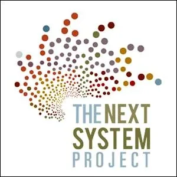
](https://thenextsystem.org/)
Amplify Your Connections To Share And Discover Cutting-Edge Thinking And What Is Blocking It
Experiment EVERYGEN.40
For example, check out The Next System Project and help them amplify what is working while you help them transform the blocks that are keeping things not working. They say:
Systemic problems require systemic solutions.
Through our work at different scales and in a range of sectors, the Next System Project functions as a research and development lab for political-economic alternatives. From comprehensive research and policy development for systemic change to targeted interventions in areas like energy democracy and public banking, we connect designs for a better future with the networks that can make them real. Responding to genuine hunger for a new way forward, and building on innovative thinking and practical experience with new economic institutions and approaches being developed in communities across the country and around the world, we are assembling the elements of a new political economy for the United States in the twenty-first century.
These are smart people, just like you. Figure out what they have learned that you can use and what you have figured out that they can use. The future emerges through co-intelligence.
Either our co-intelligence will be consciously collaborative or unconsciously competitive. Who decides?
After doing this experiment, please register Matrix Code EVERYGEN.40 in your free account at StartOver.xyz.
This Experiment is worth 1 Matrix Point.
[
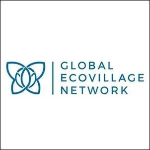
](http://gen-europe.org/)
Empower Your Team With Edgeworker Solutions. Empower The Ones Who Empower You!
Experiment EVERYGEN.41
The Global Ecovillage Network has been growing around the world under modern culture's news radar. It is healthy and strong. Ecovillages are nanonations dedicated to experimenting with regenerative culture designs in every sector. They've been at it for more than half-a-century. And now they are making their best solutions public at the GEN Solutions Library. You can add yours! Here is what they say:
We face many in our time. At the same time, there are so many solutions out there! And so many people eager to implement them! The Solution Library connects these two. It creates a simple access interface, with clear routes leading users to the information they are searching for. The aim is to make solutions for the transition to sustainability universally accessible.
- Browse solutions by category, location or image
- Upload your best solutions to share them with the world
- Enjoy the inspiration, comment and share your own experiences
- Implement innovative approaches in your projects
Visit the Solution Library here!
After doing this experiment, please register Matrix Code EVERYGEN.41 in your free account at StartOver.xyz.
This Experiment is worth 1 Matrix Point.
[

](http://torustechnology.org/)
Change From A Hierarchy To A Circle: Learn To Use Torus Meeting Technology
Experiment EVERYGEN.42
For many years in the Possibility Management gameworld we've searched for a meeting format that meets four important criteria.
- Simple to learn and use.
- Non-hierarchical, based on a circular or galaxical org chart rather than a pyramid, because hierarchies have the design flaw that, when you promote to the top whoever is best at climbing a power structure, the gameworld is hijacked by psychopaths (archived — not captured).
- Effectively includes and empowers a wide variety of unique individuals, for example, those who favor 'Unified Teams' and those who favor 'Transformational Teams'.
- Unleashes and integrates group intelligence for efficient and wise decision-making.
At long last, here is something that truly inspires us: Torus Technology. The funny thing is that we had to invent it ourselves!
This website is intended to be your free online mini-handbook for how you too can make use of Torus Technology in your company, project, community, government, organization, club, etc. The distinctions, thoughtmaps, models, and processes in this website are all copyleft. This means they cannot be copyrighted. This is all open-code thoughtware from Possibility Management donated to the creative commons.
After doing this experiment, please register Matrix Code EVERYGEN.42 in your free account at StartOver.xyz.
This Experiment is worth 1 Matrix Point.
[

](http://www.dragondreaming.org/)
Creativity Thrives When You Learn And Use Dragon Dreaming
Experiment EVERYGEN.43
"Everything is a temporary node in a process of flow."
Yes, and... what does that flow process look like?
How can you jump in and surf on it to the next Space of Possibility?
This High Level Fun nonlinear creation process was formalized by John Croft.
Dragon Dreaming is inspired by social and environmental activism, the new physics, Gaia and Earth sciences, living systems and chaos and complexity theory, and the ancient sustainable wisdom of indigenous cultures and Australian Aborigines. The method integrates holisticaly aspects which have long been ignored, separated or divided in our cultures: our right and left brain hemispheres, logic and intuition, individual and environment, theory and practice, thought and action, work and play, success and failure. Dragon Dreaming is based on liberating collective intelligence, creativity, cooperation and the sleeping power within ourselves and inherent in our communities.
After doing this experiment, please register Matrix Code EVERYGEN.43 in your free account at StartOver.xyz.
This Experiment is worth 1 Matrix Point.
[
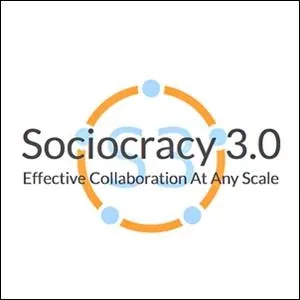
](https://sociocracy30.org/)
Learn To Implement Sociocracy 3.0
Experiment EVERYGEN.44
In 2014 we came together to co-create a body of Creative Commons licensed learning resources, synthesizing ideas from Sociocracy, Agile and Lean. We discovered that organizations of all sizes need a flexible menu of practices and structures – appropriate for their specific context – that enable the evolution of a sociocratic and agile mindset to achieve greater effectiveness, alignment, fulfillment and wellbeing.
We love sociocracy because we see organizations and their members thrive when they use elements of it to enrich or transform what they currently do.
We also love agile, lean, Kanban, the core protocols, NVC, and many other ideas too. We believe that the world will be a better place as more organizations learn to pull from this cornucopia of awesome practices that are emerging into the world today, and learn to synthesize them with what they already know.
Therefore we decided to devote some of our time to develop and evolve Sociocracy, integrating it with many of these other potent ideas, to make it available and applicable to as many organizations as possible.
After doing this experiment, please register Matrix Code EVERYGEN.45 in your free account at StartOver.xyz.
This Experiment is worth 1 Matrix Point.
[
](http://zegg.org/)
Join Zegg Ecovillage Community For Their Summer Program In Germany
Experiment EVERYGEN.45
You can learn about love and relationships, practice new forms of communication, or take another step on your path of personal growth.
Events for working guests enable a direct experience of ZEGG: an ecological pioneer project.
All of our seminars and festivals are examples of “small-scale community”, making it possible for you to directly try out a holistic way of living.
Visiting us can change your life.
Welcome!- Finding visionary and practical solutions for an ecological life in solidarity with others
- Educational programs, seminars and festivals to topics like personal and collective evolution
- Anual community courses that include an extensive education about the concious navigation of a group process
- Creative and integral design of presentation processesLectures about alternative ways of life on congresses and conferences.
After doing this experiment, please register Matrix Code EVERYGEN.45 in your free account at StartOver.xyz.
This Experiment is worth 12 Matrix Points.
[
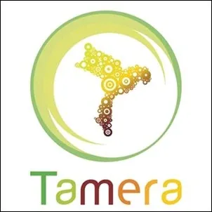
](http://http//tamera.org)
Visit The Summer Program Of Tamera The 'Healing Biotope' In Portugal
Experiment EVERYGEN.46
Started in 1978 with a small group, we’re currently a community of around 200, working towards autonomous decentralized models for a post-capitalist world, with those who share our vision of 'Terra Nova' - a world beyond war.
We believe in a future without war, in love without fear. We work to build Terra Nova by creating Healing Biotopes as centers to research and model a new planetary culture, with strong ethical foundations.
We educate and support people in the world who share our vision of a planetary culture of autonomous and interconnected communities, a post-patriarchal civilization free of violence and war. With our 40 years of experience, we know the importance and balance of inner and outer peacework required to affect change individually, regionally, nationally and globally.
After doing this experiment, please register Matrix Code EVERYGEN.40 in your free account at StartOver.xyz.
This Experiment is worth 12 Matrix Points.
[
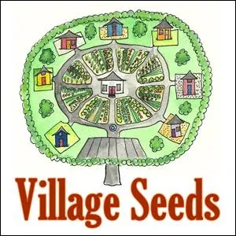
](http://villageseeds.mystrikingly.com/)
Plant Yourself Full of Village Seeds And Build Villages
Experiment EVERYGEN.47
People do what they do because this is the best solution they know.
Their best solution comes from their current thoughtware.
Thoughtware can be upgraded.
We have been researching: What is the best thoughtware for creating a regenerative culture Village - regardless of whether that Village is in the middle of the city or the middle of the desert.
Each bit of clarity is a 'meme'.
Put the Village Memes together and you create a 'Village Seed'.
When you carry the Village Memes inside of you as skills, experience, and knowledge, then you become a Village Seed.
Then, wherever you go, you can grow a Village! Even in a Refugee Camp...
Here are the best regenerative-culture Village Memes we have found, ready for you to use! Free for the taking!
Maybe you have more for us to share?
After doing this experiment, please register Matrix Code EVERYGEN.47 in your free account at StartOver.xyz.
This Experiment is worth 1 Matrix Point.
[
](https://www.imatteryouth.org/)
Choose To Matter
Experiment EVERYGEN.48
iMatter has been a lot of things over the years. From community awareness projects to speaking engages, federal lawsuits, and worldwide marches, iMatter has coached young folks in using their authentic power to transform the world.
Throughout this journey, in every project and campaign, we noticed that while work was being pushed forward, youth leaders were burning out quickly and finding harm in the climate movement. Work was moving forward, but at a great cost. Looking at this, we knew something needed to change.
Now, our program supports young humans to do the work of healing from the systems that give them power over others and give others power over them, of developing right relationships and shared visions with vulnerable and frontline communities, and of co-creating a project or action that truly centers climate justice.
After doing this experiment, please register Matrix Code EVERYGEN.48 in your free account at StartOver.xyz.
This Experiment is worth 1 Matrix Point.
[
](https://acespace.org/)
Become the Alliance For Climate Education
Experiment EVERYGEN.49
We educate young people on the science of climate change and empower them to take action.
We’re growing an inclusive network of young people, educators and supporters from communities across the country.
The people of ACE are dynamic, passionate and ready to inspire. Together, we work to bring equity and inclusion to everything we do.
ACE is a data-driven organization. That's why we work with leading researchers to make sure our programming works.
After doing this experiment, please register Matrix Code EVERYGEN.49 in your free account at StartOver.xyz.
This Experiment is worth 1 Matrix Point.
[
](http://thisiszerohour.org/)
Take The Stand That THIS IS ZERO HOUR
Experiment EVERYGEN.50
A safe climate and livable future are possible. We want everyone to understand that this reality for our youth and future generations is in reach. This presentation is designed for distribution to schools, teachers, students, and other groups for use in support of deeper conversations about climate recovery and the remedy being requested in Juliana v. U.S. You can download your own copy here.
Securing the legal right to a safe climate:
https://www.ourchildrenstrust.org/
60 Minutes Program: "I fear that I won't have a home.":
https://www.youtube.com/watch?v=C1g2K4DRxLo
After doing this experiment, please register Matrix Code EVERYGEN.50 in your free account at StartOver.xyz.
This Experiment is worth 1 Matrix Point.
[
](https://www.generation-now.com/)
Realize That The Time Is NOW
Experiment EVERYGEN.51
It’s time for us to challenge the story that has been written for us. This is bigger than politics. Bigger than imaginary borders. Bigger than the environment. Bigger than melting ice and rising tides. The climate crisis is bigger than any one of us. That’s why it’s going to take all of us. The moment we are in is too urgent to be defined by the story that change only comes from the UN, politicians and activists. We need to dream big and act fearlessly. We need students, artists, entrepreneurs, athletes, moms, warriors, and teachers, to reclaim our power to shape the future. We all have a part to play—regardless of who you are, where you’re from or what you do. In the face of a crisis that threatens everything we love, there has never been a more unifying moment. Whether we make it or not is up to us.
We are planting one trillion trees on planet Earth.
THE TIME IS NOW.
After doing this experiment, please register Matrix Code EVERYGEN.51 in your free account at StartOver.xyz.
This Experiment is worth 1 Matrix Point.
[
](https://www.sunrisemovement.org/)
Become The Sunrise
Experiment EVERYGEN.52
We're building an army of young people to make climate change an urgent priority across America, end the corrupting influence of fossil fuel executives on our politics, and elect leaders who stand up for the health and wellbeing of all people.
We are ordinary young people who are scared about what the climate crisis means for the people and places we love. We are gathering in classrooms, living rooms, and worship halls across the country. Everyone has a role to play. Public opinion is already with us - if we unite by the millions we can turn this into political power and reclaim our democracy.
We are not looking to the right or left. We look forward. Together, we will change this country and this world, sure as the sun rises each morning.
After doing this experiment, please register Matrix Code EVERYGEN.52 in your free account at StartOver.xyz.
This Experiment is worth 1 Matrix Point.
[
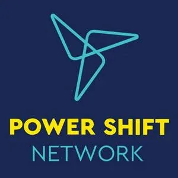
](http://powershift.org/)
Cause The Power Shift
Experiment EVERYGEN.53
We’re a network of young people, organizations run by young people, and campaigns that support youth organizing.
Young people today face a world in crisis: a broken political system, deepening inequality, entrenched and emboldened racism, and a catastrophically changing climate. But we’re committed to action, mutual support, and solidarity -- we’re building a strong, intersectional, bottom-up movement to take on the climate crisis, shift the power, and change the system.
We build our power by coming together. Between 2007-2013, the Power Shift Network (then known as Energy Action Coalition) hosted four national Power Shift convergences, gathering hundreds of young climate leaders to learn, strategize, and build the movement. In 2016, we took Power Shift on the road, hosting four regional convergences. We have also supported several other regional gatherings over the last several years, from Oregon to Ohio to North Carolina.
We still believe that there’s power in coming together.
After doing this experiment, please register Matrix Code EVERYGEN.53 in your free account at StartOver.xyz.
This Experiment is worth 1 Matrix Point.